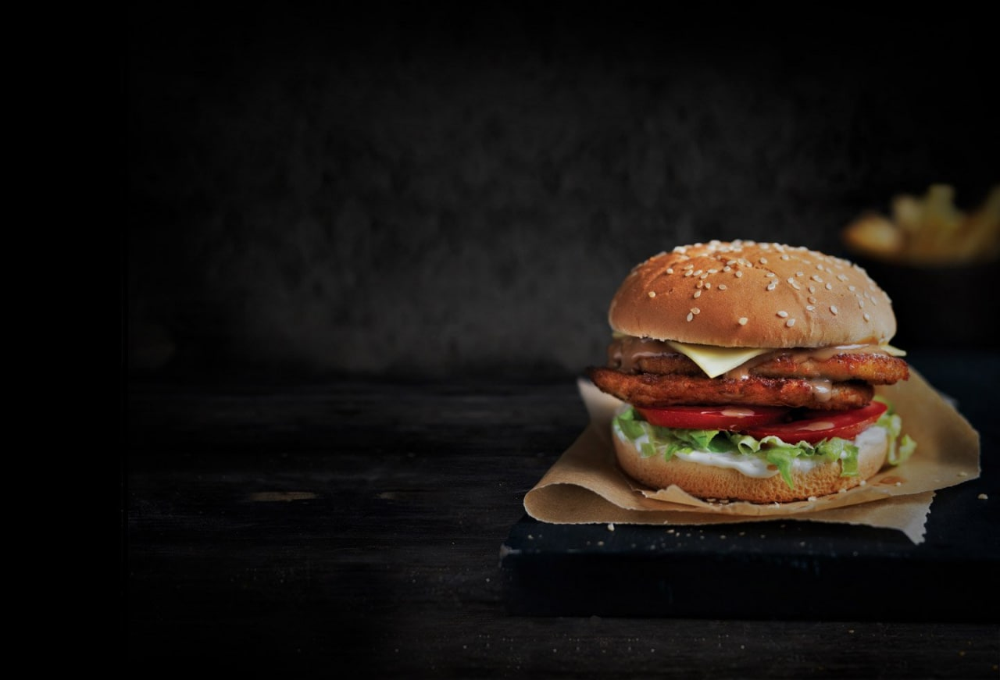
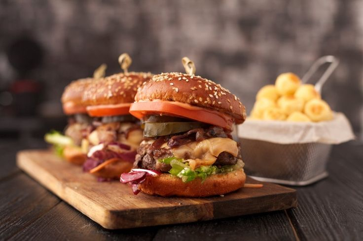

Бургеры являются неотъемлемой частью современного фаст-фуда. Популярность бургеров стала отправной точкой для появления и развития специализированных заведений – бургерных или бургер-баров. Буквально за последние 5 лет рынок заполонили заведения самых различных уровней обслуживания – от небольших ларьков до именитых ресторанов, и основа меню у них – это именно бургеры. Уровень возникшей конкуренции требует от владельцев бургерных каких-то изюминок и нововведений, развития в плане привлечения и удержания потребителя. Если удержать гостя можно только вкусной едой, то привлечь – грамотной и скрупулезно продуманной рекламной кампанией. В том, на чем она должна основываться и как её формировать, будем разбираться поэтапно

Образцовый бургер отвечает, как минимум, 8 требованиям:
Полноценный состав. Разберите бутерброд и проверьте, все ли ингредиенты на месте. Состав зависит от вида бургера (а их сотни!). Так, в гамбургер должна входить булочка, рубленая говяжья котлета, овощи и соус, а в чизбургер – еще и сыр. В фишбургере вы найдете рыбу, а в чикенбургере – курицу. Однако сказать, какой вид бургера вкуснее, не возьмется ни один кулинар.
Правильная котлета. Оптимальная степень прожарки – средняя. Обратите внимание, не пригорел ли бифштекс, есть ли на нем румяная корочка, красивый ли он на вид. Достаньте котлету из бургера и попробуйте ее без соуса и других ингредиентов. Мясо должно быть сочным, нежным и насыщенным по вкусу. Не менее важна цельность и однородность котлеты, отсутствие разрывов, костей, комочков.
Правильная булочка. Для приготовления лучших бургеров используют варианты, посыпанные кунжутом. Семена усиливают вкус блюда. Внутренние поверхности булочки должны быть прожарены и смазаны соусом. Так, после «сборки» бургера мясо не потеряет соки: их будет удерживать корочка и заправка. Обязательно проверьте, не подгорели ли булочки.
Правильные овощи. Важно, чтобы продукт был свежим. Могут использоваться маринованные, вяленые овощи. Четких рекомендаций, какой должен быть бургер в плане начинки, нет.
Местоположение сыра. Этот пункт актуален для чизбургеров. Ломтик сыра должен находиться на нижней булочке. Это служит дополнительным барьером для мясного сока. Котлета остается сочной, а булочка не пропитывается влагой.
Соблюдение пропорций. Вес мяса должен составлять 225 г. Соответственно, котлета в виде плоской лепешки – не вариант. Оптимальные параметры бифштекса – 2 см в высоту и 10 см в диаметре. А вот булка, напротив, не должна быть слишком толстой. Помните, что звезда по-настоящему вкусного бургера – мясо.
Качество «сборки». Оцените, не разваливается ли бургер, удобно ли его есть, не вытекает ли заправка. Овощи и соуса должны быть добавлены в меру.
Вкусовые качества. Продегустируйте блюдо в полной «сборке», прочувствуйте, как компоненты сочетаются между собой. И ваши рецепторы помогут понять, какой бургер самый вкусный.